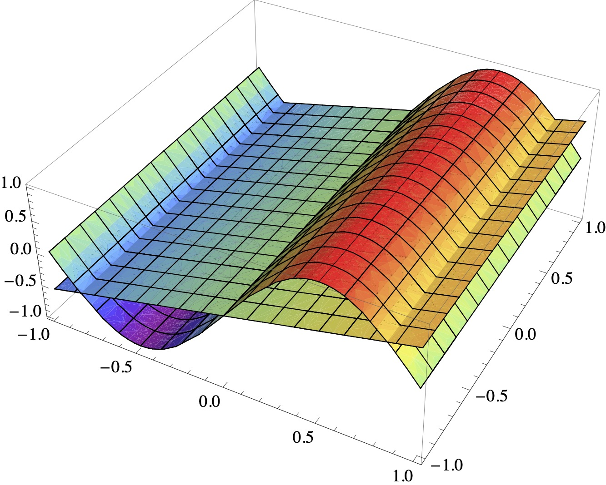
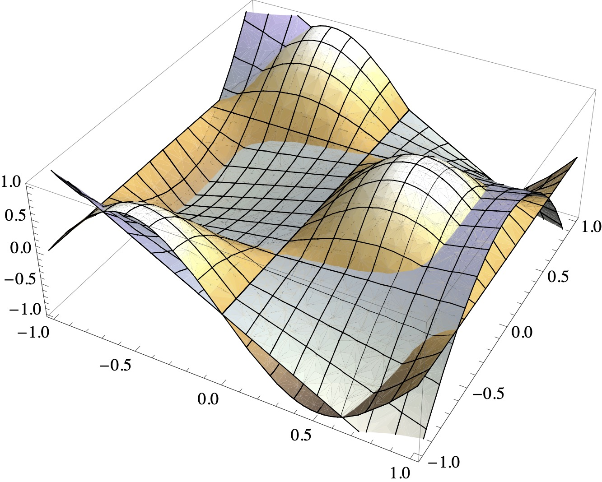

Least-squares problems#
Least-squares problems occur in optimisation, data fitting and other fields of the mathematical sciences.
Consider a matrix \(A \in \mathbb{R}^{m \times n}\) and a vector \(a \in \mathbb{R}^m\). The central idea of the least-squares problem is to find a vector \(\hat{x} \in \mathbb{R}^n\) that minimises the Euclidean norm (or \(2\)-norm) of the residual vector \(Ax - a\). This problem is formulated as
Here \(\text{arg}\min_{x \in \mathbb{R}^n} \|Ax - a\|_2\) is the set of all \(x\) which minimise \(\|Ax - a\|_2\). If the minimiser is unique, we also write (with a slight abuse of notation)
Thus, in the least-squares sense, the optimisation problem generalises the concept of the solution to a system of linear equations: if \(A\) is invertible, then \(A \hat{x} = a\). If \(A\) is overdetermined, then \(\hat{x}\) aims to minimise the amount by which \(A \hat{x}\) fails to achieve equality with \(a\).
The normal equation#
The identity
is called the normal equation of the least-squares problem.
Theorem 6 (Normal equation of least-squares approximations)
Let \(A \in \mathbb{R}^{m \times n}\), \(a \in \mathbb{R}^m\). Then
if and only if \(\hat{x}\) satisfies the normal equation.
Proof. The vector \(\hat{x}\) minimises the least-squares problem if and only if for all \(\epsilon\in\mathbb{R}^n\):
Step 1: Suppose that \(\hat{x}\) does not satisfy the normal equation. Then \(\| A^\top A\hat{x} - A^\top a \|_2 > 0\). Suppose that \(\hat{x}\) minimises the least-squares problem. With \(\epsilon := \delta (A^\top A\hat{x} - A^\top a)\), \(\delta \in \mathbb{R}\), the above implies
This is a contradiction because \(\Phi(\delta) < 0\) for small negative \(\delta\).
Step 2: Suppose that \(\hat{x}\) satisfies the normal equation. Then, by the above,
Properties of the normal equation#
We assume in this section that \(m \ge n\) and that \(A\) has a full rank. Let \(A = U\Sigma V^\top \in \mathbb{R}^{m \times n}\) be the SVD of \(A\). To generalise the relative condition number of a square matrix, we define the relative condition number for a rectangular \((m \times n)\)-matrix as
We also have
guaranteeing the non-singularity of \(A^\top A\) and, therefore, the existence of a unique minimiser of the least-squares problem.
Furthermore,
It follows that the linear system in the normal equation has a squared condition number compared to the original matrix \(A\).
Subsequently, we will explore orthogonalisation methods to circumvent this condition number squaring, offering a more stable approach to solving the least-squares problem.
Solving least-squares problems with the QR decomposition#
We assume in this section that \(m \ge n\) and that \(A\) has a full rank. The full \(QR\) decomposition of \(A\) can be expressed as follows:
where \(Q_1\) and \(Q_2\) are orthogonal matrices, and \(R\) is an upper triangular matrix. Substituting this decomposition into the least-squares problem, we get:
Here, we observe that the choice of \(x\) influences only the first block-row. In the second block row, \(x\) is multiplied by zero, meaning no choice of \(x\) will reduce the contribution from this part. Therefore, the minimiser \(\hat{x}\) of the least-squares problem is found by solving:
Returning to the question of the \(2\)-norm condition number:
where we use the submultiplicativity of the matrix \(2\)-norm and that \(\| Q \|_2 = 1\) and \(Q^\top = Q^{-1}\).
Consequently, the \(QR\) decomposition approach effectively circumvents the condition number squaring issue associated with the normal equation method.
Solving least-squares problems with the SVD#
The SVD can also be used to solve least-squares problems. In this section, we assume that \(m \ge n\) but not that \(A\) has a full rank. The full SVD of \(A\) is
with \(\hat{\Sigma}\) as in the previous chapter. Substitute into the least-squares problem to obtain
Let \([y_1, y_2]^\top = [V_1^\top x, V_2^\top x]^\top\) and factorise out \(U\) to obtain
The second block row as well as the choice of \(y_2\) do not affect the least-squares norm and, hence, \(y_1 = \hat{\Sigma}^{-1} U_1^\top a\) and therefore
is a (possibly non-unique) minimiser of the least-squares problem. This leads to the important concept of a pseudo-inverse of a matrix.
Definition 7 (Pseudo-inverse of a matrix)
Let \(U \Sigma V^\top\) be an SVD of \(A \in \mathbb{R}^{m \times n}\) and \(m \geq n\). Then the pseudo-inverse of \(A\) is
where \(\hat{\Sigma} \in \mathbb{R}^{r \times r}\) and \(r = \text{rank}(A)\).
The pseudo-inverse of \(A\) is a generalisation of the inverse of \(A\). In the same way that \(A^{-1}a\) solves the linear system \(Ax=a\) for a square matrix \(A\), the pseudo-inverse \(A^{\dagger}\) applied to \(a\) solves the least-squares minimisation problem \(\|Ax-a\|_2\) for rectangular \(A\).
Python skills#
Solving a least-squares problem with QR decomposition#
The following example shows how to use NumPy’s QR decomposition to find the least-squares approximation
import numpy as np
from scipy.linalg import solve_triangular
# Define matrix A and vector a
A = np.array([[1, 2], [3, 4], [5, 6]])
a = np.array([7, 8, 9])
# Perform QR decomposition
Q, R = np.linalg.qr(A)
# Compute Q^T * a
Q_T_a = np.dot(Q.T, a)
# Solve Rx = Q^T a for x
x = solve_triangular(R[:A.shape[1], :], Q_T_a[:A.shape[1]])
print("Solution x:", x)
Solving a least-squares problem with SVD#
Here is a problem that is solved with the SVD.
import numpy as np
# Step 1: Define A and a
A = np.random.rand(5, 3) # A random 5x3 matrix
a = np.random.rand(5) # A random vector of length 5
# Step 2: Perform SVD
U, sigma, VT = np.linalg.svd(A)
# Step 3: Compute the pseudo-inverse
Sigma_inv = np.hstack((np.diag(1 / sigma), np.zeros((3, 2))))
A_pseudo_inverse = VT.T @ Sigma_inv @ U.T
# Step 4: Solve for x
x = A_pseudo_inverse @ a
print("Solution x:", x)
Self-check questions#
Question
Let’s consider three points: \((1, 2)\), \((2, 3)\), and \((3, 5)\). Find the best-fitting line \(y = m x + c\) in the least-squares sense:
Answer
The minimisation problem can be equivalently formulated as
We learned three methods to proceed: solve the normal equation, the QR reformulation or the SVD reformulation. The two latter choices are preferable for bigger problems solved with a computer. However, for hand calculations of small problems, solving the original normal equation is often the most convenient approach.
We have
and
Thus, the minimiser solves
giving \((\hat{c}, \hat{m}) = (1/3, 3/2)\).
Remark One can plot an illustration of the calculation with Python.
import matplotlib.pyplot as plt
import numpy as np
# Given points
x_points = np.array([1, 2, 3])
y_points = np.array([2, 3, 5])
# Given least-squares solution
c = 1.0/3.0
m = 3.0/2.0
# Line of best fit
x_line = np.linspace(0, 4, 100)
y_line = m * x_line + c
# Plotting
plt.figure(figsize=(8, 6))
plt.plot(x_line, y_line, label=f'Best Fit Line: y = {m:.2f}x + {c:.2f}', color='red')
plt.scatter(x_points, y_points, label='Data Points', color='blue')
plt.xlabel('x')
plt.ylabel('y')
plt.title('Least-squares Line Fit')
plt.legend()
plt.grid(True)
plt.show()
Question
Let \(x=(0,0.25,0.5,0.75,1)\).
Find a least-squares quadratic approximation to \(\{(x_i,\exp(x_i))\}\).
Find a least-squares quadratic approximation to \(\{(x_i,\cos(x_i))\}\).
Answer
The quadratic approximation is of the form \(p_2(x) = a \, x^2 + b \, x + c\). The minimisation problem can be equivalently formulated as
\[\begin{split} \text{arg}\min_{(a,b,c) \in \mathbb{R}^3} \left\| \begin{pmatrix} x_1^2 & x_1 & 1\\ x_2^2 & x_2 & 1\\ x_3^2 & x_3 & 1\\ x_4^2 & x_4 & 1\\ x_5^2 & x_5 & 1\end{pmatrix} \begin{pmatrix} a\\ b\\ c \end{pmatrix} - \begin{pmatrix} \exp(x_1)\\ \exp(x_2)\\ \exp(x_3)\\ \exp(x_4)\\ \exp(x_5) \end{pmatrix} \right\|^2. \end{split}\]The normal equations in matrix form are:
\[\begin{split} \begin{pmatrix} \sum_i x_i^4 & \sum_i x_i^3 & \sum_i x_i^2 \\ \sum_i x_i^3 & \sum_i x_i^2 & \sum_i x_i \\ \sum_i x_i^2 & \sum_i x_i & n \end{pmatrix} \begin{pmatrix} a \\ b \\ c \end{pmatrix} = \begin{pmatrix} \sum_i (x_i^2 y_i) \\ \sum_i (x_i y_i) \\ \sum_i y_i \end{pmatrix} \end{split}\]where \(y_i = \exp(x_i)\) and \(n\) is the number of data points. Therefore, the least-squares quadratic approximation is given by:
\[ p_2(t)=1.005+0.8643t+0.8435t^2. \]Analogously, the approximation is \(p_2(t)=1.001-0.03389t-0.4288t^2\).
Question
For many applications, one must obtain polynomial least-squares approximations at the same nodes \(\{ x_i \}\) for many different sets of data \(\{y_i\}\). What is the best way to do this? Only try to answer this after having worked out the two previous questions.
Answer
The matrix \(A\) of the normal equation \(A^\top A\hat{x} = A^\top a\) depends on \(\{ x_i \}\), but not \(\{y_i\}\). Compute the QR or singular value decomposition of \(A\) once, and apply it for each of the different \(\{y_i\}\).
Question
Let \(A\in\mathbb{R}^{m\times n}\) with \(m\geq n\) and \(\text{rank}(A)=n\) and \(a\in\mathbb{R}^m\). How should one approach the following least-squares problem with the SVD? Find \(\hat{x}\in\mathbb{R}^n\), such that
Answer
The SVD of \(A\) is given as \(A=U\Sigma V^\top\), where \(U\in\mathbb{R}^{m\times m}\) and \(V\in\mathbb{R}^{n\times n}\) are orthogonal matrices and \(\Sigma \in\mathbb{R}^{m\times n}\) is a diagonal matrix with the nonzero singular values \(\sigma_1\geq\sigma_2\geq\dots\geq\sigma_n >0\) in decreasing order on the diagonal of the matrix, using that \(A\) has full rank.
Substituting into the least-squares problem, we have
for \(y=V^\top x\) and \(\hat{a} = U^\top a\). We find \(y_j\) as \(y_j = \hat{a}_j/\sigma_j\) by minimising the above expression. This is equivalent to \(x = A^{\dagger} a\).
Question
We now consider the modified least-squares problem
with \(L\in\mathbb{R}^{n\times n}\) nonsingular. Show that the solution of this least-squares problem is identical to the solution of
Answer
The vector \(\hat{x}\) minimises the least-squares problem if and only if for all \(\epsilon\in\mathbb{R}^n\):
Step 1: Suppose that \(\hat{x}\) does not satisfy the generalised normal equation \((A^\top A+L^\top L)x = A^\top a.\). Then \(\| (A^\top A + L^\top L) \hat{x} - A^\top a \|_2 > 0\). Suppose that \(\hat{x}\) minimises the least-squares problem. With \(\epsilon := \delta ((A^\top A + L^\top L) \hat{x} - A^\top a)\), \(\delta \in \mathbb{R}\), the above implies
This is a contradiction because \(\Phi(\delta) < 0\) for small negative \(\delta\).
Step 2: Suppose that \(\hat{x}\) satisfies the generalised normal equation. Then, by the above,
ensuring that \(\hat{x}\) is a minimiser.
Question
Let \(A = QR\) be the QR decomposition of a matrix \(A\in\mathbb{R}^{m\times n}\) with \(R\in\mathbb{R}^{n\times n}\). Show that the singular values of \(A\) are identical to those of \(R\).
Answer
We use the full QR decomposition; that is, let
Let \(R = U\Sigma V^\top\) be the SVD of \(R\). Plugging into the above equation gives
This is the singular value decomposition of \(A\) with singular values contained in \(\Sigma\).
Question
Let
What is the pseudo-inverse of \(A\)? Describe all solutions of the least-squares problem \(\text{arg}\min_x \|Ax - a\|_2\).
Answer
The pseudo-inverse is
The pseudo-inverse selects the solution \((1,0)^\top = A^{\dagger} a\). Clearly, the \(x_2\) component does not affect the value of \(A x\) so that the solutions of the least-squares problem are of the form \((1, x_2)^\top\), \(x_2 \in \mathbb{R}\).
Optional material#
Principles of orthogonal approximation
Definition 8
Let \(V\) be a vector space over ,\(\mathbb{K} \in \{ \mathbb{R}, \mathbb{C} \}\). A mapping
is called a scalar product if the following conditions hold:
conjugate symmetry:
\[ \forall \, v, w \in V : s(v,w) = \overline{s(w,v)}. \]linearity:
\[ \forall \, u,v,w \in V \; \forall \, \alpha, \beta \in \mathbb{K} : \; s(\alpha v + \beta w, u) = \alpha \, s(v,u) + \beta \, s(w,u). \]positivity:
\[ \forall \, v \in V \setminus \{ 0 \} : \; s(v,v) > 0 \]
The positivity condition is meaningful because conjugate symmetry ensures that \(s(v,v) = \overline{s(v,v)}\) is real-valued.
Often, one denotes scalar products with angle brackets: \(s(v,w) = \langle v, w \rangle\). Scalar products are also called inner products, and vector spaces equipped with a scalar product are called inner product spaces.
Fact: Interpolation error bound
Let \((V, \langle \cdot, \cdot \rangle)\) be an inner product space. Then, the mapping \(v \mapsto \sqrt{\langle v, v \rangle}\) defines a norm.
Example 10
(a) Let \(A\) in \(\mathbb{R}^{n \times n}\) be a symmetric, positive definite matrix. Then the mapping
is a scalar product on \(\mathbb{R}^n\). The canonical scalar product is defined with \(A\) being the identity matrix \(I\).
(b) Let \(A\) in \(\mathbb{C}^{n \times n}\) be a Hermitian, positive definite matrix, i.e. \(A = A^H\). Then the mapping
is a scalar product on \(\mathbb{C}^n\).
(c) Let \(\Omega \subset \mathbb{R}^n\) be open and non-empty. Let \(\gamma \in C(\Omega, \mathbb{R})\) be positive, i.e. \(\gamma(x) > 0\) for all \(x \in \Omega\). The set of Riemann integrable functions \(v : \Omega \to \mathbb{K}^m\) for which
is finite is denoted \(L^2_\gamma(\Omega, \mathbb{K}^m)\). It is a vector space closed under pointwise addition and scalar multiplication. It is equipped with a scalar product.
If \(\gamma \equiv 1\), then \(L^2(\Omega, \mathbb{K}^m) := L^2_\gamma(\Omega, \mathbb{K}^m)\) and \(\langle \cdot, \cdot \rangle_{\Omega} := \langle \cdot, \cdot \rangle_{\Omega,\gamma}\).
Two vectors \(v,w \in V\) are called orthogonal if \(\langle v, w \rangle = 0\). A subspace \(P \subset V\) is called orthogonal to \(v \in V\) if \(\langle v, p \rangle = 0\) for all \(p \in P\).
Fact: Orthogonal approximation
Let \((V, \langle \cdot, \cdot \rangle)\) be an inner product space. Let \(P\) be a finite-dimensional subspace of \(V\) and \(v \in V\). Then there is a unique best approximation \(p \in P\) to \(v\) in \(P\), which is distinguished by the condition
In words, \(v-p\) is orthogonal to \(P\).
Suppose that \(P\) has the basis
i.e. each element \(q\) can be written as a linear combination
where the coefficients \(x_j \in \mathbb{K}\) are unique for each \(q\). In particular there are coefficients \(\hat{x}_0, \ldots, \hat{x}_k\) in \(\mathbb{R}\) of the best approximation \(p\):
It follows from the above fact that, for all \(\ell \in \{ 0, 1, \ldots, k \}\),
and thus that
Hence, the best approximation can be computed by solving
where \(A\) contains the entries \(a_{j\ell} = \langle p_j, p_\ell \rangle\) and \(a\) contains the entries \(a_\ell = \langle v, p_\ell \rangle\).
Fact: Orthogonal approximation
The matrix \(A\) is positive definite and therefore invertible.
Example 11
Let \(\Omega = (-1,1)^2\) be non-empty, open and \(V = L^2(\Omega, \mathbb{R})\). Let \(P = \mathcal{P}_{1,2}\) be the space of \(2\)-variate polynomials with degrees less than or equal to \(1\). The space \(\mathcal{P}_{1,2}\) has the basis
because for every \(q \in P\) there is exactly one triple \((x_{00}, x_{10}, x_{01}) \in \mathbb{R}^3\) such that
The double index notation is convenient to \(2\)-variate functions; however, one could equally well also denote the basis by \(p_0\), \(p_1\), \(p_2\) and the coefficients by \(x_0\), \(x_1\), \(x_2\). In the double index notation, the first index marks the degree in \(t_1\) and the second in \(t_2\).
The best approximation to \(v \in L^2(\Omega)\) can be computed by solving a \(3 \times 3\) linear system. Using also double indices for the matrix entries, one has
The right-hand side depends on \(v\). Choosing \(v(t_1,t_2) = \sin (\pi t_1)\) one obtains
The resulting linear system is
The solution of the system is \((0,\frac{3 \pi}{16},0)\) and therefore the best approximation is
The functions \(v\) and \(p\) are depicted here:

A remarkable feature of the example is that all off-diagonal entries in \(A\) vanish. This means that the basis functions are mutually orthogonal. In general, one cannot expect this. For instance, one can show that the functions
are a basis of \(\mathcal{Q}_{2,2} := \text{span}(p_{00}, \ldots, p_{22})\). Computing, for example,
implies that orthogonality is lost and that the matrix \(A\), implementing \(L^2\) approximation in \(\mathcal{Q}_{2,2}\) with \(p_{00}, \ldots, p_{22}\) as underlying basis, has off-diagonal entries.
One can already observe in the 1-dimensional case that the basis of the approximation space \(P\) needs to be chosen carefully. For instance, if \(P = \mathcal{P}_n\) with basis \(1, t, t^2, \ldots, t^n\), then the resulting matrix \(A\) is poorly conditioned for larger and even moderate values of \(n\). However, the `more orthogonal’ the basis functions are, the better conditioned the linear system is. In the ideal case, the basis is orthonormal, implying that \(A = I\).
There are different options to obtain an orthonormal basis in multivariate space. One can use the Gram-Schmidt method, which works for all (finite-dimensional) inner product spaces. For instance, one can start with the above \(p_{00}, \ldots, p_{22}\) to generate an orthonormal basis of \(\mathcal{Q}_{2,2}\) with this method.
However, assembling the multivariate basis from an orthonormal \(1\)-variate basis is often more economical. Let \(p_\alpha, p_\beta\) be orthogonal functions in \(L^2_\gamma((a,b),\mathbb{K}^m)\). Then the functions
are orthogonal in \(L_\eta^2((a,b)^2, \mathbb{K}^m)\) with \(\eta(t_1,t_2) = \gamma(t_1) \cdot \gamma(t_2)\) because
with \(i, j, k, \ell \in \{ \alpha, \beta \}\). In particular, if \(p_\alpha\) and \(p_\beta\) are orthonormal, then the products \(p_\alpha \cdot p_\beta\) are orthonormal.
Let us use this argument to construct an orthogonal basis of \(\mathcal{Q}_{2,2}\). Functions in \(\mathcal{Q}_{2,2}\) have the form
Recall that the \(t_1^j t_2^k\) are a basis of \(\mathcal{Q}_{2,2}\). Even without the proof that they are, in fact, a basis (which was omitted), one can directly conclude that \(\mathcal{Q}_{2,2}\) spanned by the \(9\) functions \(t_1^j t_2^k\), which means that \(\mathcal{Q}_{2,2}\) can at most be \(9\) dimensional.
We leave it as an exercise to check that the so-called Legendre polynomials
are orthogonal in \(L^2((-1,1), \mathbb{R})\). Consequently, the functions
are orthogonal in \(L^2((-1,1)^2, \mathbb{R})\).
Fact: Independence of orthogonal vectors
Mutually orthogonal vectors in an inner product space \((V, \langle \cdot, \cdot \rangle)\) are linearly independent.
Thus, the \(p_{jk}\) are linearly independent. Moreover, the \(p_{jk}\) belong to \(\mathcal{Q}_{2,2}\). For instance,
has the structure a linear combination in the original span with \(\alpha_{1,2} = \frac{3}{2}\) and \(\alpha_{0,0} = -\frac{1}{2}\).
Fact: Basis of orthogonal vectors
A selection of \(n\) linearly independent, nonzero vectors in an \(n\)-dimensional vector space \(V\), \(n \in \mathbb{N}\), is a basis of ,\(V\).
Therefore the \(p_{jk}\) are a basis of \(\mathcal{Q}_{2,2}\). The matrix \(A\) above is diagonal if the \(p_{jk}\) are orthogonal.
Example 12
Let \(V = L^2((-1,1)^2, \mathbb{R})\). Compute the best approximation \(p\) to
in \(P = \mathcal{Q}_{2,2}\).
We use the Legendre product basis for the computation. Then the coefficients \(\hat{x}_{jk}\) in
are given by
taking the diagonal structure of the system into account. One calculates
Therefore, the system of equations turns into
Furthermore,
Therefore
